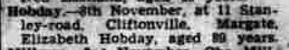
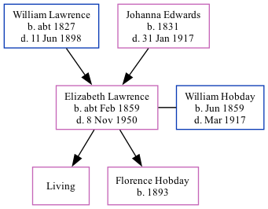

Elizabeth Hobday (née Lawrence) cFeb 1859 - 1950
[ Home ] | [ Calendar ] | [ Surnames Index ] | [ Family History ]The child of William Lawrence (a harbor laborer) and Johanna Edwards, Elizabeth Lawrence, the great-great-aunt of Nigel Horne, was born in St Lawrence, Thanet, Kent, England c. Feb 18591,2,3,4,5, was baptized there on Apr 24, 1859 and also married William Hobday (an ironmonger's assistant with whom she had 2 children: Ethel Elizabeth and Florence Evelyn, along with 1 surviving child) there, on Mar 19, 1882.
Throughout her life, Elizabeth lived in several places: on Chapel Lane, St Lawrence, Thanet, Kent, England on Apr 7, 18612; on 3 Lorne Road, St Lawrence in Thanet on Mar 31, 19016 (when she was living with her mother, Johanna Brooker); and on 16 Bloomsbury Road, Ramsgate, Kent on Apr 2, 19117 (when she was living with her mother, Johanna Brooker).
She died on Nov 8, 1950 on 11 Stanley Road, Cliftonville, Kent.
Parents
- William was born c. 1827
- Johanna Brooker was born in 1831
Children
- Florence Evelyn was born in 1893
Citations
- 1861 England Census Online publication - Provo, UT, USA: The Generations Network, Inc., 2005.Original data - Census Returns of England and Wales, 1861. Kew, Surrey, England: The National Archives of the UK (TNA): Public Record Office (PRO), 1861. Data imaged from the National
- 1861 England, Wales & Scotland Census - Findmypast (was age 2 and the daughter of the head of the household)
- 1901 England Census Online publication - Provo, UT, USA: The Generations Network, Inc., 2005.Original data - Census Returns of England and Wales, 1901. Kew, Surrey, England: The National Archives of the UK (TNA): Public Record Office (PRO), 1901. Data imaged from the National
- 1911 England Census Online publication - Provo, UT, USA: Ancestry.com Operations, Inc., 2011.Original data - Census Returns of England and Wales, 1911. Kew, Surrey, England: The National Archives of the UK (TNA), 1911. Data imaged from the National Archives, London, England.
- England & Wales births 1837-2006 - Findmypast
- 1901 England, Wales & Scotland Census - Findmypast (was age 42 and the wife of the head of the household)
- 1911 Census for England & Wales - Findmypast (was age 49 and the wife of the head of the household)
Media
Thanet Advertiser - 14 Nov 1950

England & Wales births 1837-2006 - BMD/B/1859/1/HP/000702/019
England & Wales marriages 1837-2008 - BMD/M/1882/1/AZ/000140/178
Kent, Canterbury Archdeaconry marriages 1538-1928 - GBPRS/CANT/M/97022027/2
England Marriages 1538-1973 - R_848394405/2
England & Wales deaths 1837-2007 - BMD/D/1950/4/AZ/000478/087
England Births & Baptisms 1538-1975 - R_885343461
Kent Baptisms - GBPRS/CANT/B/96404156
England Births & Baptisms 1538-1975 - R_884654021
1901 England, Wales & Scotland Census - GBC/1901/0007448828
1911 Census for England & Wales - GBC/1911/RG14/04526/0257/2
Family Tree
Generated by Ged2Site. Last updated on Jul 20, 2025